Part 2 closed the smallest useful loop: show a message box and exit cleanly.
Here we stress-test draw-test: a ROP program with loops and branches that draws from cursor input—
roughly the same control-flow ideas as normal code (conditionals, loops, jumps), which is where people often argue about ROP’s
“capability boundary” in game-security contexts.
Pseudocode (Fig. 1):
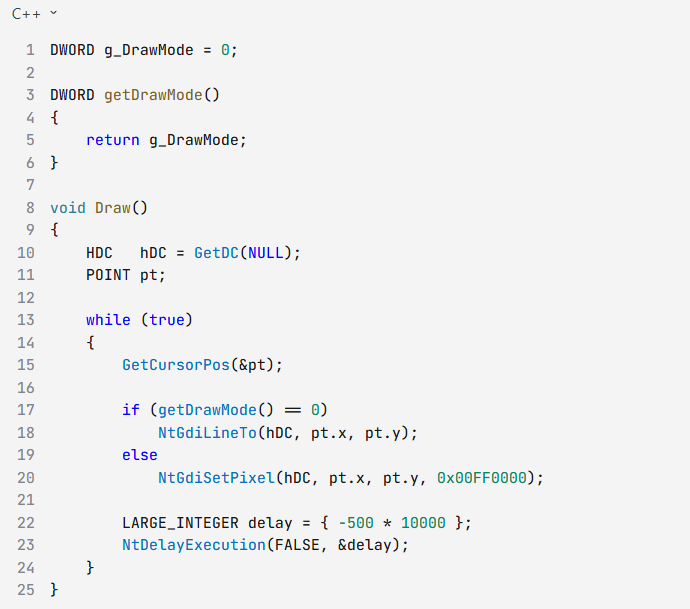
Fig. 1 · Draw / getDrawMode pseudocode
Runtime (Fig. 2):
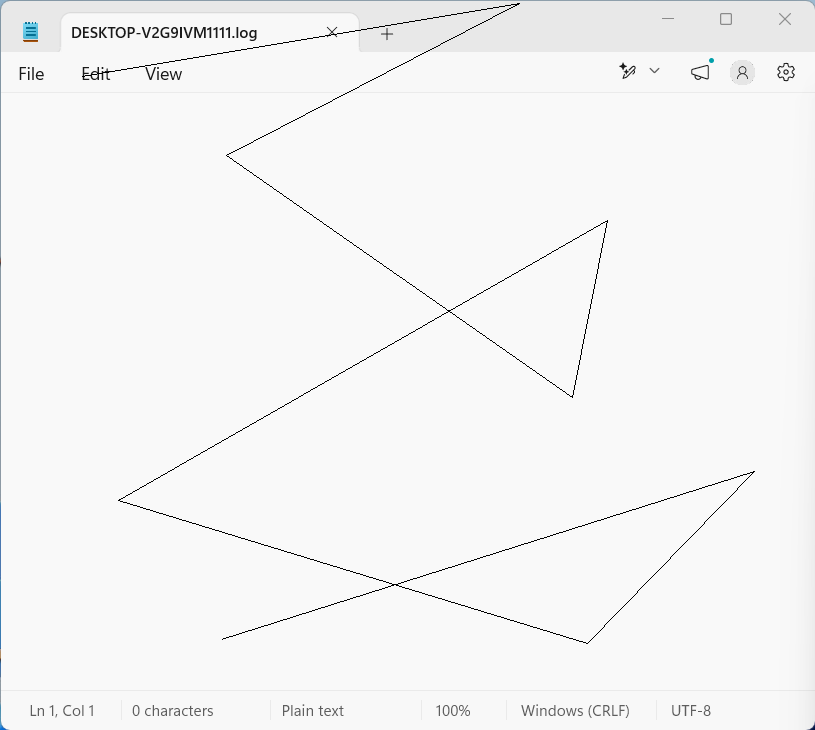
Fig. 2 · Runtime result
1. Overall layout
The pseudocode splits into two ROP chains: a main chain for Draw, and a sub-chain to get
drawMode. You also need branching (pixel vs line) and a loop (thread keeps running—similar to persistent cheat logic).
Toggle pixel vs line in the demo source (Fig. 3):
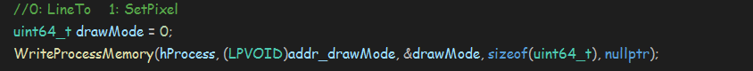
Fig. 3 · Source: drawMode (pixel / line)
Main block and sub block (Fig. 4):
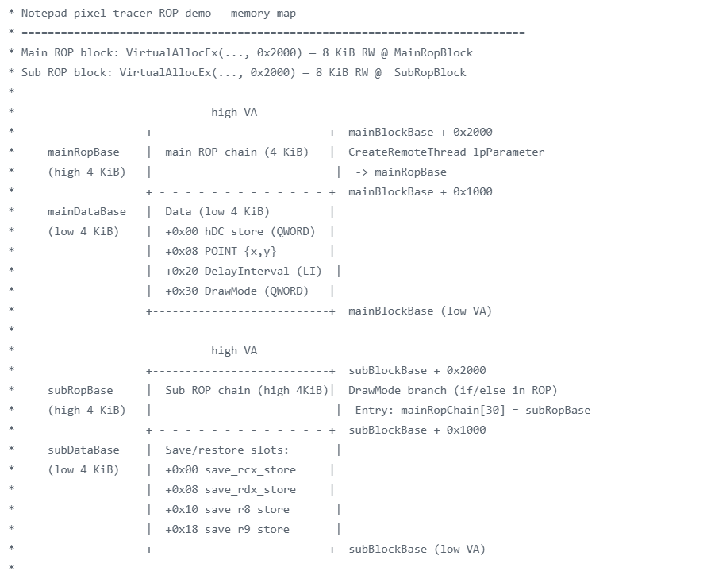
Fig. 4 · MainRopBlock / SubRopBlock layout
Notes:
MainRopBlock: Same habit as Part 2—ROP chain and data region are separate. The data area holds slots for
hDC, cursor coordinates, Sleep interval, drawMode, etc., for gadgets to read/write later.
SubRopBlock: Holds the get drawMode slice from the pseudocode in its own remote allocation—again
chain + data, isolated from the main block so pivoting RSP does not stomp the other region.
Five private 8 KB stacks (Fig. 5):
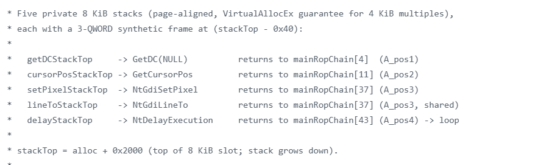
Fig. 5 · Five stack regions and return slots
Notes:
Private stacks (Part 2 pattern): Before each API call, pivot to a dedicated 8 KB stack with a
return-to-main-chain slot; five calls → five regions in Fig. 5.
API choice: Win32 wrappers like SetPixel, LineTo, Sleep touch
shadow space and can corrupt ROP layout; the demo uses NtGdiSetPixel, NtGdiLineTo,
NtDelayExecution for cleaner stacks.
Extra: Part 2 introduced shadow space; IDA makes it easy to spot and avoid.
2. Main chain — GetDC (hDC into data)
Fig. 6: main-chain gadgets call GetDC; hDC is stored in the MainRopBlock data region for later loads.
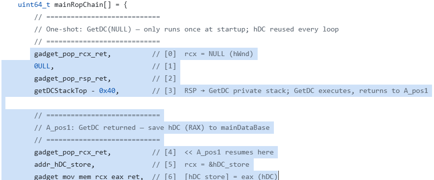
Fig. 6 · GetDC and hDC in data region3. Main chain — GetCursorPos
Fig. 7: selected gadgets call GetCursorPos. This is the loop anchor (A_Pin).
At the end of the main chain, RSP pivots back here (Figs. 7–8 implement the loop).
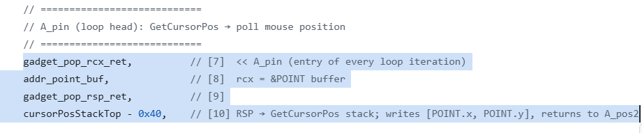
Fig. 7 · Loop anchor A_Pin
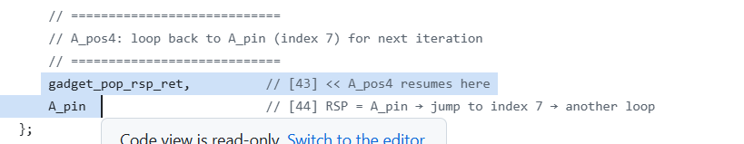
Fig. 8 · Chain tail pivots RSP to A_Pin4. Main chain — argument setup
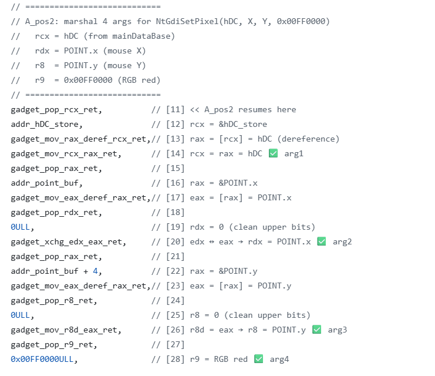
Fig. 9 · Load data region into rcx–r9
Notes:
Arguments ready: NtGdiSetPixel and NtGdiLineTo share the same calling convention; Fig. 9 fills
rcx, rdx, r8, r9.
From data: Earlier steps (GetDC, GetCursorPos, …) wrote hDC, coordinates, etc. into
MainRopBlock; these gadgets perform memory → register loads.
Reminder: After rcx–r9 are set, try not to clobber them; drawing still needs these values. If a step must reuse them, save and restore first.
5. Main chain — enter the sub-chain
All four argument registers are ready on the main chain; next, drawMode chooses pixel vs line—the logic from Fig. 1 (get
drawMode). Pivot RSP into SubRopBlock for that decision (Fig. 10).
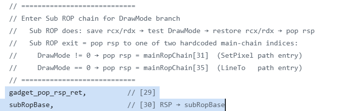
Fig. 10 · Pivot RSP into sub-chain
Notes:
Control flow = RSP: ROP rarely tells a “call in, ret back” story—point RSP at another chain slice and the next gadgets run there.
Fig. 10 is the main chain aiming RSP at SubRopBlock.
Main ↔ sub: After get drawMode, the sub-chain pivots RSP back to the main chain for pixel or line drawing—unusual in normal code, routine in multi-chain ROP.
Context on hops: With main and sub chains, RSP hops are normal; gadgets on the next chain may overwrite rcx–r9 from §4—stay clear-headed and save when needed.
6. Sub-chain — save context
Right after entering the sub-chain, apply “save when needed”—Fig. 11: at the head of ropSubChain, gadgets store
rcx in save_rcx_store and rdx in save_rdx_store (two slots in
SubRopBlock data; demo: subDataBase+0x00 / +0x08).
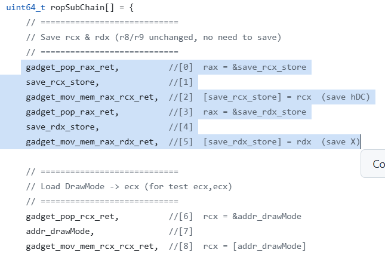
Fig. 11 · Save register context
Notes:
Save rcx, rdx: §4 already loaded hDC, coordinates, etc.—the first two args for NtGdiSetPixel /
NtGdiLineTo. get drawMode and IF logic reuse rcx/rdx and would overwrite them; write
save_rcx_store / save_rdx_store first, restore after the branch.
Skip r8, r9: Third/fourth args (e.g. color) stay in r8/r9; ropSubChain does not modify them—still valid for NtGdi* after return.
7. Sub-chain — read drawMode + IF branch
After get drawMode, the Fig. 12 selection is IF logic on ropSubChain—branch between pixel and line ROP paths
(LineTo path in Fig. 13).
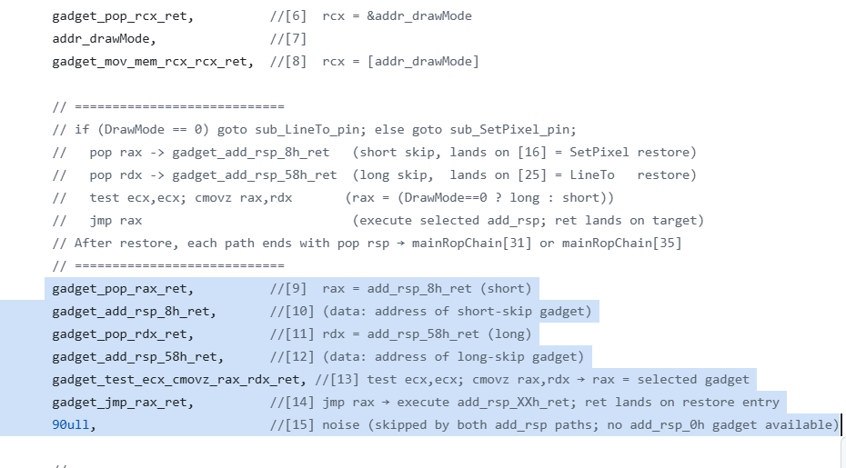
Fig. 12 · test / cmovz / jmp rax
Notes:
Branch = RSP change: No plain if/else—prepare two “stack skip” gadgets (add rsp, N; ret), use
IF to pick one, jmp rax to run it—still changing where RSP points on the chain.
Two skips: rax ← add rsp, 8h; ret (drawMode ≠ 0, pixel path);
rdx ← add rsp, 58h; ret (drawMode == 0, LineTo, lands at index [26]).
Key gadget: test ecx, ecx; cmovz rax, rdx; ret tests ecx (drawMode); if zero,
cmovz picks the 58h path via rdx → rax.
Take the jump: Index [14]jmp rax runs the chosen gadget; RSP skips
58h to index [26] (matches Fig. 13 highlight).
LineTo tail (Fig. 13): [26]–[33] restore rcx/rdx from save_rcx_store /
save_rdx_store; [34]–[35]pop rsp to main-chain mainRop_lineToPin
(mainRopChain[35]) for §8.
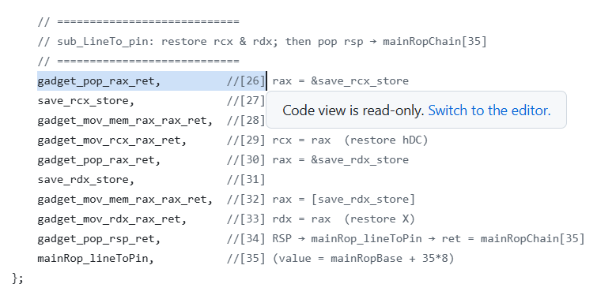
Fig. 13 · LineTo branch stack layout
Exercise: The pixel path is the other branch—study Demo/draw-test on your own.
8. Main chain — mainRop_lineToPin landing
When drawMode == 0, the sub-chain uses [34]–[35] to land RSP on
mainRop_lineToPin (mainRopChain[35]). Fig. 14 is the LineTo entry on the main chain:
[35] pivots to the LineTo private stack; [36] calls NtGdiLineTo (stack frame layout as in earlier tutorials).
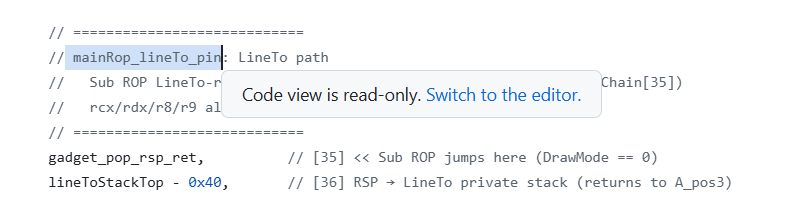
Fig. 14 · mainRop_lineToPin and LineTo stack
rcx–r9 were prepared in §4; the sub-chain restored rcx/rdx from save_*_store—here it is only
pivot + API, same pattern as Part 2 MessageBox, so we do not step through every gadget.
Both paths rejoin at A_pos3 (mainRopChain[37]) for §9 Sleep and the loop.
9. Main chain — Sleep
After pixel/line paths meet at A_pos3 (mainRopChain[37]), Fig. 15 throttles and
closes the loop: ~500 ms Sleep (demo: NtDelayExecution), then pivot RSP back to
A_Pin from §3 (chain index [7]).
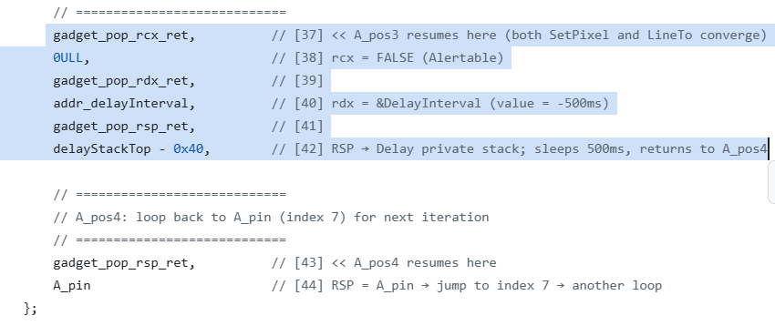
Fig. 15 · NtDelayExecution and return to A_Pin ([7])
Notes:
A_pos3 ([37]–[42]): rcx = 0 (non-alertable), rdx → delay in data (demo:
−500 ms); pop rsp to Delay private stack, NtDelayExecution, return
A_pos4 ([43]).
Close loop ([43]–[44]): Another pop rsp loads A_Pin; execution continues at index
[7]—GetCursorPos again, matching Figs. 7–8 for the next Draw round.
Closing Q&A
Can ROP build complex game cheats? Yes—but you maintain a whole “ROP kingdom”, often many sub-chains (draw-test is the high-complexity example).
Is it a good everyday dev choice?Mixed: painful to debug, real downsides; defenders who do not understand ROP may still struggle short term.
How long will ROP stay practical?CET is the long-term counterweight, but rollout depends on the ecosystem; it will not vanish overnight.
Missing gadgets? Common. We use test ecx, ecx; cmovz rax, rdx; ret instead of
add rsp, rax; ret for that reason; in authorized research you may place tiny stubs in target RWX (do not abuse).
Where to hunt gadgets? Red teams often use system modules; game-focused work often prefers game modules—version-aligned, large, higher hit rate.
ROP cheats in the wild?Yes, rarely discussed openly.
Summary
Main + sub blocks, GetDC / GetCursorPos / NtGdi* / Sleep, and five 8 KB private stacks implement
loop (A_Pin), main/sub pivots, and IF (cmovz + jmp rax → RSP).
Change RSP = change control flow; multi-chain hops are normal—save context when needed.
Continued from Part 2: Win32 APIs with shadow space can break chain layout—NT syscalls are often a better fit;
if gadgets are missing, authorized research may use RWX stubs in the target process.
Capability boundary: ROP can express rich logic, but engineering cost and hard limits are real.